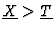
\underline{T}$">, i.e., if >1 (resp. >2) is the restriction of > to the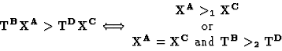
\bf {T}^D\bf {X}^C \Longleftrightarrow ... ... \bf {X}^A =\bf {X}^C \hbox{ and }\bf {T}^B >_2 \bf {T}^D\cr}\end{displaymath}">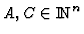
and for all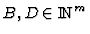
. For a subset H of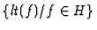
, where lt(f) denotes the leading term of f. If is a specialization then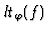
(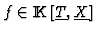
) will denote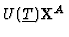
where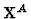
is the biggest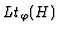
will denote the ideal generated by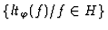
.
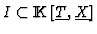
be an ideal, a specialization and G a Gröbner basis for I with respect to a -admissible ordering. If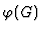
is a Gröbner basis for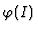
Remark that, as G is a Gröbner basis of I, we can write
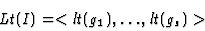
\end{displaymath}">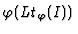
: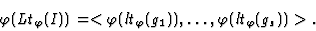
.\end{displaymath}">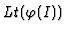
-- unless we know a priori a Gröbner basis of -- but finding this is the purpose of our computations. In the zero-dimensional and univariate case (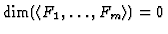
and n=1) the results here described can be stated in a very practical way, avoiding any test.
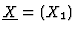
. Let be a specialization. If G is a Gröbner basis for I with respect to a -admissible ordering then is a Gröbner basis for .